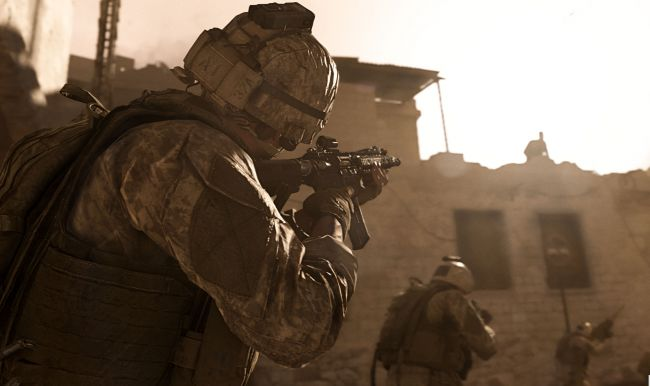
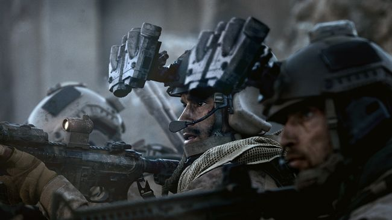
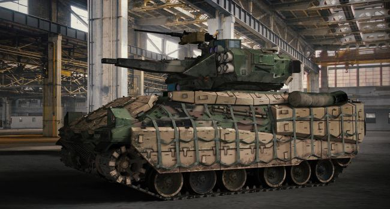
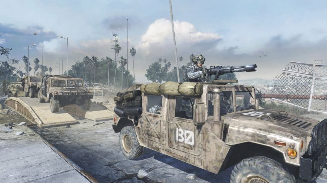

Activision heeft de pc-specificaties voor Call of Duty: Modern Warfare bekend gemaakt. Ben jij nieuwsgierig of jou computer of laptop nog goed genoeg is om de nieuwe Call of Duty te draaien? Lees dan snel verder.
Een interessant ding over de specificatie is dat er staat dat de game 175 GB vrije schijfruimte nodig heeft om de game te downloaden en te installeren. Hoe dan ook, bekijk hieronder de pc-specificaties voor Call of Duty: Modern Warfare:
MINIMUM REQUIREMENTS
Operating System: Windows® 7 64-bit (SP1) or Windows® 10 64-bit
Processor: Intel® Core™ i3-4340 or AMD FX-6300
Video: NVIDIA® GeForce® GTX 670 / NVIDIA® GeForce® GTX 1650 or AMD Radeon™ HD 7950 – DirectX 12.0 compatible system
Memory: 8GB RAM
Storage: 175 GB available hard drive space
Internet: Broadband Internet connection
RECOMMENDED REQUIREMENTS
Operating System:Windows® 10 64-bit latest update
Processor: Intel® Core™ i5-2500K or AMD Ryzen™ R5 1600X
Video: NVIDIA® GeForce® GTX 970 / NVIDIA® GeForce® GTX 1660 or AMD Radeon™ R9 390 / AMD Radeon™ RX 580 – DirectX 12.0 compatible system
Memory: 12 GB RAM
Storage: 175 GB available hard drive space
Internet: Broadband Internet connection
Call of Duty: Modern Warfare—Everything we know so far about the reboot
By Christopher Livingston a month ago
Everything we know about Call of Duty: Modern Warfare, Infinity Ward's reboot of the Modern Warfare series.
COMMENTS
The fourth Modern Warfare game won't have a 4 in the title. That's because 2019's Call of Duty: Modern Warfare isn't a sequel, but a reboot, or as developer Infinity Ward calls it, a "re-imagining" of the Call of Duty: Modern Warfare series.
With this reset of Modern Warfare's storyline, Infinity Ward hopes to create a relevant, realistic world with events that feel "ripped from the headlines" while also bringing back familiar characters from past games in the series like Captain John Price. Unlike Call of Duty: Black Ops 4, Modern Warfare will have singleplayer campaign on top of the usual multiplayer modes and co-op missions.
Here's everything we know about Call of Duty: Modern Warfare.
What is the Call of Duty: Modern Warfare release date?
Call of Duty: Modern Warfare released globally on October 25, 2019. If you're in North America, it actually came out on October 24.
Call of Duty: Modern Warfare review
Modern Warfare is finally out in the wild, and so is our review. We scored it 80 out of 100, which is pretty good in our book. Morgan praised the game for its new weapon handling, campaign, and clever multiplayer modes, but wishes it did more to break away from tradition. "For as far as Modern Warfare moves the needle, it still spends so much energy checking the same old boxes."
Russian fans aren't happy with Modern Warfare's depiction of the country
As reported by Tyler, some Russian fans have flooded Modern Warfare with negative user reviews on Metacritic, citing an offensive representation of Russia. One big issue is Modern Warfare's "reimagining" of the Highway of Death incident from the Gulf War, where U.S. forces bombed a highway of retreating combatants and, reportedly, many civilians. In Modern Warfare's version of the event with the same name, it was Russia who carried out this massacre in the fictional country of Urzikstan. For the full context, read Tyler's complete story.
Modern Warfare's PC trailer is pretty, ultrawide
If the aspect ratio of the trailer seems a little off, that's because its captured to look cooler on an ultrawide monitor. The trailer itself doesn't show anything we didn't already know, but it's nice to see Call of Duty embracing its PC version with uncapped frame rates, multi-monitor support, and an FOV slider.
How does Call of Duty: Modern Warfare's crossplay work?
Call of Duty: Modern Warfare marks the first time the franchise completely supports crossplay for PC, PS4, and Xbox One. Since every game handles crossplay a little differently, Infinity Ward took the time to fully explain how it works in Modern Warfare.
First of all, crossplay is completely opt-in. If you enable it, you'll need to link a Call of Duty account to form a platform-agnostic friends list, not unlike the Epic friends lists in Fortnite. Crossplay is supported in all multiplayer modes except Ranked and competitive tournaments.
In the pre-game lobby, every players' current control scheme (controller or mouse and keyboard) is shown next to their name. By default, you'll only be matched with the same control type, but you can remove this filter to play with all input methods. Of course, grouping up with a friend using a different control input will also remove this filter.
Setting your matchmaking preferences to only allow other keyboard and mouse users doesn't mean you'll only match with PC players, though, as both console versions will fully support keyboard and mouse. Controller users might feel naturally inclined to lock out mouse users with more aim control, but Infinity Ward is confident that Modern Warfare is balanced across all input methods.
"Not only have we spent a ton of time balancing and making sure the playing field is level between the control schemes, but also, you know, a ton of surprising user tests where we're looking at high-skill user tests and seeing a mix of those control schemes in the top three every time," production manager Paul Haile said.
Crossplay beta tests have gone well so far, it sounds, with a lengthy but not total list of identified issues posted by Infinity Ward.
Watch Modern Warfare's gritty campaign trailer
The new trailer is the public's first good look at Modern Warfare's campaign. The story seems to be more character-based this time around, instead of dwelling on a hard-to-follow plot of intrigue, betrayal, and uncomfortable depictions of terrorist attacks. Oh, I'm sure this will have those too, but at least we'll know our characters' names by the end.
Infinity Ward has also released a new behind-the-scenes trailer on the creation of the campaign. The video below takes a broad approach, examining some of the
narrative strokes (superpowers fight via proxies in the fictional nation of Urzikstan), and also some of the talent Infinity Ward consulted (war correspondents, former soldiers). Whether the story manages to be as complex and nuanced as Infinity Ward seems to want, we'll have to wait and see.
What we know about the singleplayer campaign
The campaign will feature missions in a number of European cities as well as the Middle East. In addition to playing as special forces soldiers armed with high-tech combat gear, players will also take the roll of "rebel freedom fighters" who use improvised weapons like molotov cocktails and IEDs, and have to rely on guerrilla tactics to defeat Tier One enemies.
One Modern Warfare singleplayer campaign mission we saw a demo of takes place in North London after a terror attack in Piccadilly Circus. SAS teams infiltrate a townhouse to eliminate a terrorist cell, hunting for the cell's leader, known as The Wolf. Another mission shows the origin story of Farah, a rebel freedom fighter whose town was bombed and invaded by Russian military forces when she was a child.
Spec Ops mode is back, and there's a trailer
This is our first good look at Spec Ops mode, which supports 4 players this time around. The trailer is mostly out of context flair, but there is one highly recognizable bit towards the end. We see a few scenes of what looks like an homage to Mile High Club, a bonus Call of Duty 4 mission played after the campaign's credits that takes place in a plane mid-flight.
Modern Warfare's Spec Ops Survival mode won't come to PC for a year
As part of Activision and Sony's ongoing partnership with Call of Duty, the PS4 will be the only place to play the Survival Spec Ops mode until October 1, 2020. The traditional co-op missions of Spec Ops will be available to everyone.
Fun fact: By the time Survival comes to PC and Xbox One, we'll be getting ready for the release of next year's CoD. I'm sure everyone will remember and return to it by then.
After the announcement, Infinity Ward narrative director Taylor Kurosaki addressed some complaints on Twitter yesterday, saying that Survival mode, "which is a sliver of Spec Ops," is the only exclusive content.
Infinity Ward senior communications manager Ashton Williams also followed up, with a message posted in the Modern Warfare subreddit.
"To be clear, our all-new Special Ops mode will be releasing on all platforms on October 25th. We’re looking forward to revealing Special Ops on October 8th. When we launch on October 25th, everyone on all platforms will be getting Modern Warfare which includes Campaign, the all-new Special Ops mode and the entirety of Multiplayer, which is a massive experience we’ve worked to create. Special Ops Survival is an additional, classic mode that will be available on PS4,"
Gunsmithing will let you kit out weapons based on your play style
The new weapon customization option Gunsmithing will allow you to customize your primary and secondary weapons with "the precise type and style of firepower you require for any type of multiplayer game mode." What's important to know about Gunsmithing is that it will force you to choose what upgrades you value most. You'll only be able to apply five upgrades to each gun, even though there may be more possible components to customize.
You can check out a bunch of different combos in the teaser trailer below.
Call of Duty
✔
@CallofDuty
Loadouts locked. Gear up for the #ModernWarfare Multiplayer Gameplay Premiere on August 1st.
6,008 people are talking about this
Call of Duty: Modern Warfare won't have a season pass
It feels like an unusual and somewhat refreshing bit of news: Call of Duty: Modern Warfare won't have a season pass. According to Activision, "...the team is eliminating the traditional season pass, so that they can deliver more free maps and content as well as post-launch events to all players."


The realism ruleset is probably the best way to play team deathmatch
Morgan Park got to go hands on with Modern Warfare's "realism" ruleset for team deathmatch and found the slower pace some of the most fun in team deathmatch yet. Firefights are snappier and more lethal and "I find myself sprinting less and relying more on hearing to detect threats before they appear. No HUD also means that keeping track of my remaining ammo is guesswork at best."
There's a 2v2 mode called Gunfight
A new multiplayer mode called Gunfight pits two teams of two with randomized loadouts against one another on very small maps. So small that you're expected to kill one another in 40 seconds or else the rules change to force your hand. The 40 second mark might bring a capture the flag element or decide a win based on which team has the most health at the end of a timer. There's no reviving or healing in Gunfight so the matches do seem to end prior to the rule shakeup, in Chris's hand-on experience.
In the video we see the Pine, King, and Stack maps. Pine, as you might expect, is set in a forest clearing, and the more obliquely-named King is a warehouse MOUT training site. Stack appears to be a shipping depot.
You'll be able to learn more about Gunfight and Call of Duty: Modern Warfare's other multiplayer modes during a multiplayer reveal event scheduled for August 1 at 10 AM PT on Twitch.
A supposed Battle Royale mode is referenced in the source code, but it's unconfirmed
Supposed references to 40 Call of Duty: Modern Warfare multiplayer modes in the beta's source code include a Battle Royale mode with the tagline "Eliminate Everyone. Survive." Infinity Ward hasn't commented on the existence of the mode in the code, but it hasn't ruled out battle royale in past interviews.
Advertisement
Whatever the mode looks like in Modern Warfare, it won't be treated with the same focus as Black Ops 4. "We’re excited for large player counts and things like that, but right now we’re really focused on core multiplayer," said design director Joe Cecot speaking to IGN.
In the Modern Warfare beta, performance took a noticeable hit while playing the 64-player Ground War mode. A battle royale mode with the same player count could work (Apex Legends only supports 60 players per match and feels good). If Infinity Ward really is emphasizing core multiplayer modes, then the majority of the modes from the code dump (including battle royale) might only be playable on a limited-time basis.
Call of Duty: Modern Warfare won't have a Zombies mode
Sorry, zambo fans. Campaign gameplay director Jacob Minkoff recently confirmed to PlaySation Lifestyle that Modern Warfare won't have a Zombies mode whatsoever. On the bright side, a focus away from zombies does bode well for those "strategic co-op missions" mentioned above. Could be a proper return to Modern Warfare 2's excellent Special Ops missions.
Your 'Tamagunchi' pet thirsts for the blood of your enemies
In stark contrast to Modern Warfare's gritty, headline-ripping singleplayer campaign, you can equip a "Tamagunchi" (a riff on the popular Tamagotchi virtual pet toy from the '90s) to your soldier's wristwatch that is literally fed by kills in multiplayer.
"This little thing on your wrist, every time you get a string of kills, it goes, 'Ya-ta!' and it makes a little noise, then you look at it, and it evolved out of an egg," art director Joel Emslie said in a Game Informer interview. "Tamagunchis are fed by the player’s performance in multiplayer. It’s just this little active wristwatch thing."
The more kills you get, the happier your creepy watch pet will be. Horrifyingly, your Tamagunchi will "rot and die" if you stop feeding it the life force of others. Cool cool cool.
Killstreak rewards are back, and they're killer
 (credit: Activision)
Killstreak rewards return in Modern Warfare, and they'll only make you more fearsome. Rewards for uninterrupted killing sprees that we know of so far are a care package with juggernaut assault gear, a manned infantry assault tank with a .50 cal machine gun, and an aircraft that sprays the battlefield with white phosphorus to blind and burn enemies.
Can I just watch the trailer already?
Sure thing! You can watch the Call of Duty: Modern Warfare announcement trailer above.
Modern Warfare 2 remastered still isn't confirmed, despite PEGI rating
 credit: Activision)
After a PEGI rating showed up in March for a Modern Warfare 2 Campaign Remastered, fans have assumed that the new remaster will be packaged with Call of Duty: Modern Warfare. This would mirror the way Call of Duty 4's remaster released alongside Call of Duty: Infinite Warfare in 2016.
Yet, we're a few months from launch and Activision hasn't said a peep about a MW2 remaster. There's still strong evidence that it's coming, but we can't be sure it'll come alongside this year's game.
Modern Warfare uses a new engine and supports ray tracing
Modern Warfare will support DirectX Raytracing (DXR) on PC. And that means we can surmise that Activision and Call of Duty will be working with Nvidia and the GeForce RTX cards to support the feature. Ray tracing will even be used for audio. In a press briefing, Stephen Miller, Audio Director for the game said, "With the weapon reflection system, it uses ray tracing out into the environment and plays three sounds at point of impact. So as you're running around you actually get different sounds constantly as it behaves with the geometry."
Supporting DXR means that Activision/Infinity Ward is upgrading the IW engine to support DirectX 12, since that's a requirement for all games that support DXR. We'll have to wait and see how that effects performance once Modern Warfare launches, as traditionally DX12 engines have favored AMD hardware.
This isn't an Epic Games Store exclusive, is it?
No, of course not! Don't be silly. It's a Battle.net exclusive, just like Call of Duty: Black Ops 4. There are three options, the $60 standard edition, the $80 operator edition (with premium digital items) and a $100 operator enhanced edition (which includes the digital items plus includes 3,000 Call of Duty points).